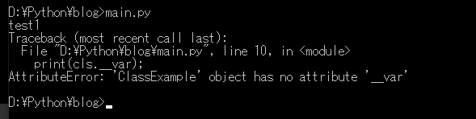

こんにちは。明月です。
この投稿はPythonでクラス(Class)を使う方法に関する説明です。
クラスの概念は他のコンパイル言語を扱った方なら別に説明がなくても十分に知っていると思います。
Pythonの場合はスクリプト言語なのでクラス概念を知らなくてもソース実装することや設計を作成することができます。
でも、管理が必要なデータや一つの概念でデータを結ばなければならないデータならクラスの概念で作ったほうが設計や実装することが理解しやすいしソースステップを減らすことができます。
下記の例を通ってクラスがあることとないことの差異を確認しましょう。
例は国語、数学、英語の成績を持っている学生の平均値とクラスの平均値を計算しましょう。
# 学生の名と国語、数学、英語の点数を入力して学生の平均値とクラスの平均値を計算する。
# 人名リスト
person = []
# 国語成績リスト
japanese = []
# 数学成績リスト
math = []
# 英語成績リスト
english = []
# 人を追加関数
def add_person(name, j, m, e):
# グローバル変数
global person
global japanese
global math
global english
# 人名リストに追加
person.append(name)
# 国語リストに追加
japanese.append(j)
# 数学リストに追加
math.append(m)
# 英語リストに追加
english.append(e)
# 平均値を計算する関数
def calculate_average(index):
# グローバル変数
global person
global japanese
global math
global english
# 国語と数学、英語を加算して3で分ける。
return int((japanese[index] + math[index] + english[index]) / 3)
# クラスの平均値を計算する関数
def calculate_total_average():
# グローバル変数
global person
# リストインデックス
i = 0
# 総点
sum = 0
# 人名リスト個数ほど繰り返す。
while i < len(person):
# 総点を加算する。
sum += calculate_average(i)
# インデックス増加
i += 1
# 平均値を計算
return sum / len(person)
# a, b, c, d, eを追加する。
add_person('a', 50, 60, 80)
add_person('b', 40, 80, 60)
add_person('c', 80, 70, 30)
add_person('d', 80, 60, 80)
add_person('e', 90, 80, 90)
# 各平均値を計算する。
i = 0
while i < len(person):
# コンソール出力
print(person[i] + " : " + str(calculate_average(i)))
# インデックス増加
i += 1
# 改行
print()
# 各平均値を計算する。
print("total")
# コンソール出力
print(calculate_total_average())
上の例をみれば各人、国語、数学、英語成績のリスト宣言して人を追加する時に各成績リストも同じく追加します。つまり、4個のリストのデータ個数はいつも同じくなります。もし同じではない場合、整合性の問題になります。
つまり、personリストは4個なのに、mathリストは2個ならデータが可笑しいでしょう。
また、リストだけ確認すると誰のデータかは知りません。例えばmathの3番目のデータはpersionの3番目のデータを確認しないと知らないという意味です。
上の例は簡単なソースなので難しくないですが、ロジックが複雑だし、データが多いならデータ管理は簡単ではないでしょう。
# Personクラスを生成
class Person():
# コンストラクタでnameと国語、数学、英語を設定する。
def __init__(self, name, japanese, math, english):
# selfを付けるとメンバー変数になる。
self.__name = name
self.__japanese = japanese
self.__math = math
self.__english = english
# 平均する関数
def calculate_average(self):
# 国語と数学、英語を加算して3で分ける。
return int((self.__japanese + self.__math + self.__english)/3)
# コンソール出力関数
def print(self):
# コンソール出力
print(self.__name + " : " + str(self.calculate_average()))
# 変数を格納するリスト
person_list = []
# person_listにPersonのインスタンスを生成して人のa, b, c, d, eを追加した。
person_list.append(Person('a', 50, 60, 80))
person_list.append(Person('b', 40, 80, 60))
person_list.append(Person('c', 80, 70, 30))
person_list.append(Person('d', 80, 60, 80))
person_list.append(Person('e', 90, 80, 90))
# 各人の平均値を計算して出力する。
for p in person_list:
p.print()
# すべての平均値を計算する。
# 総点
sum = 0
# 各人の平均値を計算を加算する。
for p in person_list:
sum += p.calculate_average()
# 改行
print()
print("total")
# コンソール出力
print(sum / len(person_list))
ソースステップだけ見てもクラスを扱うことと使わないこととソースステップも差異が大きいです。
また、各人の点数を各リストに格納したことよりクラス内部のメンバー変数で管理するので整合性も問題ないです。つまり、リストから取り除くと成績も一緒に削除されるので可笑しいデータが入ることがありません。
Pythonでクラスを使う方法は関数のdef代わりにclassキーワードを使えば生成します。小括弧はクラス継承のためにあることですが、他の投稿で詳しく説明します。
クラスはメソッドだけ構成されています。他の言語みたいに変数を宣言することができません。各関数の最初のパラメータはselfで固定になっています。
__init__の関数は初期化関数で他の言語ならコンストラクタということです。コンストラクタは無くてもクラスを扱うのは問題はないけど、可読性のためにコンストラクタを生成するほうがいいです。
特にメンバー変数はどの関数で宣言しても問題ないですが、コンストラクタで初期値を設定することがいいでしょう。
各関数のselfは自分自身のクラスを指すことです。 グローバル変数を使う方法は、self.変数名でアクセスができます。
変数名を宣言するときは、変数名の前にアンダーバー（_）を二つ付けなければならないです。そうでなければ、外部からのアクセスが可能なpublicの形で変数が指定されるため、必ずアンダーバー（_）の2つを付けてprivateとして宣言する必要があります。
# クラス生成
class ClassExample():
# コンストラクタ
def __init__(self):
# メンバー変数宣言
self.var = "test1"
self.__var = "test2"
# インスタンス生成
cls = ClassExample()
# アンダーバーを付けなければpublicタイプになり、参照ができる。
print(cls.var)
# 参照不可能
print(cls.__var)

これはOOPのカプセル化と関係がある構造です。クラスの変数が外部から直接参照がされてしまうとクラスの意味がなくなります。
メンバー変数はクラスの内部で様々な計算した結果、関数を利用して格納したデータですが、外部からのアクセスになって修正されてしまうとクラスの関数などの意味がなくなります。
クラスを生成（インスタンス）する方法は変数=クラス名（）;の呼び出します。他の言語で使うnewキーワードは必要ありません。
括弧の意味は__init__でselfパラメータを以降のパラメータでインスタンスを生成する時でデータを持ち込みます。
関数の呼び出し方法は、生成された変数で関数を呼び出します。またはクラス名.関数名（インスタンス）の形式でも宣言が可能です。
# クラス生成
class ClassExample():
# コンストラクタ
def __init__(self):
# 関数で処理が何もない場合はpass;キーワードを使う。
pass
# 関数
def print(self):
# コンソール出力
print("Hello world")
# インスタンスを生成
cls = ClassExample()
# 関数を呼び出す。
cls.print();
# 関数を呼び出す。(個人的にこの方法は慣れてない。)
ClassExample.print(cls)
ここまでPythonでクラス(Class)を使う方法に関する説明でした。
ご不明なところや間違いところがあればコメントしてください。
- [Python] 19. 非同期IOのasync/await(asyncio)を使う方法2020/06/22 18:10:12
- [Python] 18. ネットワーク(Socket)通信する方法2020/06/18 19:53:56
- [Python] 17. スレッド(Thread)とロック(lock)、そしてデッドロック(deadlock)2020/06/18 00:19:45
- [Python] 16. IO(ファイル読み取り、書き込み)を扱う方法2020/06/16 18:37:00
- [Python] 15. クラスを継承する方法2020/06/15 18:20:07
- [Python] 14. クラスプロパティ(Property)2020/06/12 17:45:13
- [Python] 13. クラス関数(class method)とダック・タイピング、そして特殊メソッド2020/06/11 19:42:29
- [Python] 12. クラス(Class)を使う方法2020/06/10 19:33:33
- [Python] 11. デコレーター（Decorator）を使う方法2020/06/09 17:27:18
- [Python] 10. モジュールとパッケージ(import)2020/06/08 19:07:50
- [Python] 09. 例外処理する方法2020/06/05 17:11:47
- [Python] 08. ジェネレータ(Generator)2020/06/04 18:46:08
- [Python] 07. globalとnonlocal2020/06/03 20:34:49
- [Python] 06. 関数(function) - インライン関数、callbak、ラムダ(lambda)そしてクロージャ2020/06/02 20:51:22
- [Python] 05. コンプリヘンション(Comprehension)を使用する方法2020/06/01 19:38:58
- [CentOs] ジェンキンス(Jenkins)をインストールする方法2021/10/18 18:28:58
- [Project design] 詳細設計(インターフェース設計と抽象化作業)2021/10/18 18:23:15
- [Project design] 基本設計(画面設計とDB設計)2021/10/17 21:21:11
- [Design pattern] 1-4. デザインパターンの抽象ファクトリーパターン(Abstract factory pattern)2021/10/15 19:31:03
- [Project design] 要件定義(要求事項整理)2021/10/15 19:28:58
- [C#] 52. Reflection機能を使い方 - Variable2021/10/15 19:27:37
- [Project design] プロジェクトを工程(ウォーターフォール vs アジャイル)2021/10/14 18:36:04
- [C#] 51. Reflection機能を使い方 - Method2021/10/14 18:34:21
- [C#] 50. Reflection機能を使い方 - Class2021/10/13 18:34:13
- [C#] 49. Operator(演算子)のオーバーロードを使い方2021/10/12 18:28:42
- [C#] 48. IEnumerableとIEnumerator、そしてyieldキーワード2021/10/11 19:49:33
- [C#] 47. Nugetを使い方(外部ライブラリ)とデータベース(MariaDB(Mysql))を使い方、そしてトランザクション(Transaction)2021/10/08 18:58:57
- [Window] MariaDBをインストールする方法2021/10/08 18:56:05
- [C#] 46. データベース(MSSQL)に接続する方法2021/10/07 18:39:58
- [C#] 45. ネットワークソケット通信(Socket)を使い方2021/10/06 19:06:25